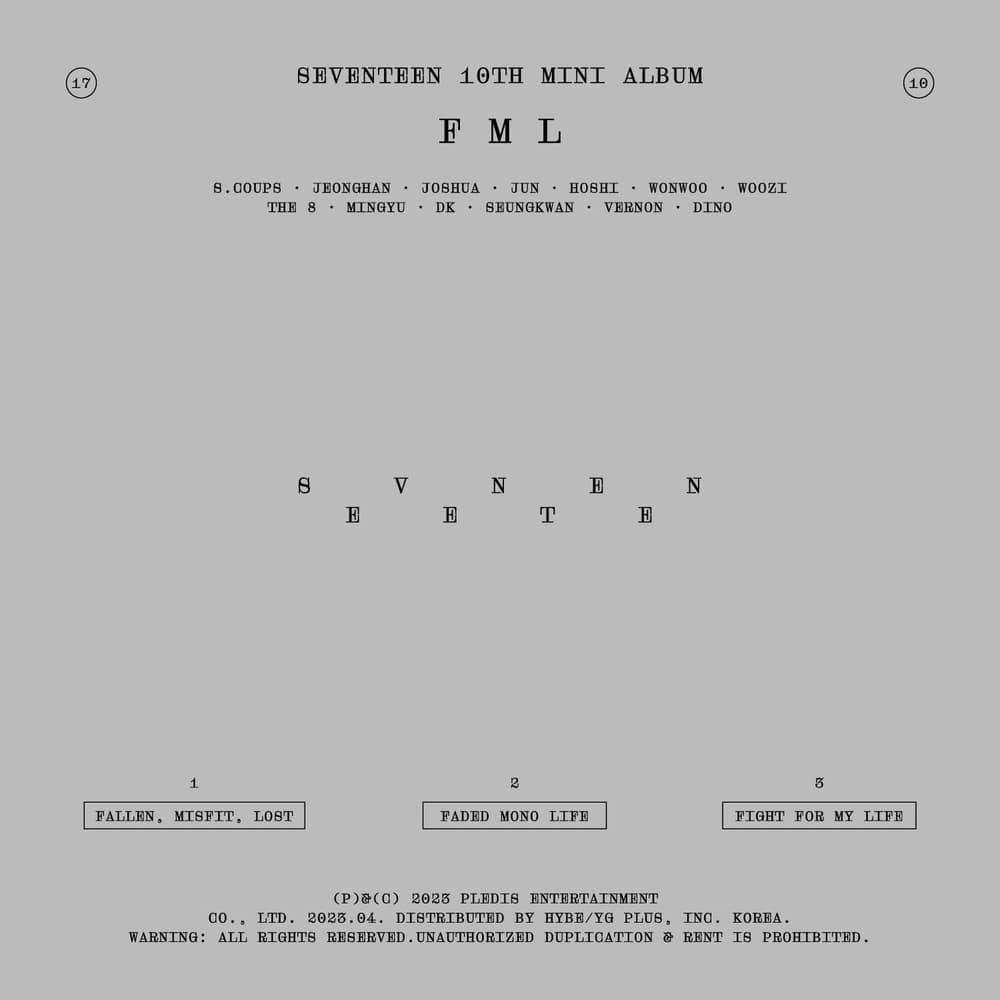
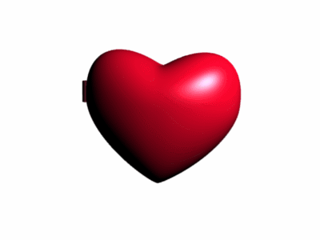

Parece que chegou algo pra você
Minha querida futura esposa, mesmo que porventura o destino tenha nos separado de corpo, você reside em meu coração. Escrevo esta carta para que lembre do tanto que eu te amo...
(Toque em "continue lendo" abaixo)

I Don't Understand But I Luv U — SEVENTEEN
I don't understand but i love you
I don't understand but i love you
I don't understand but i love you
I don't understand but i love you
I don't understand but i love you
I don't understand but i love you
I don't understand but i love you
Seria impossível deixar de falar de como seus olhos me cativam


É como meus maiores sonhos criando uma forma na realidade
Em meus dias não vejo mais sentido em dizer algo que não seja sobre você
Seria impossível deixar de falar de como seus olhos me cativam
Não poderia deixar você de mãos abanando, tome isso, torne um fragmento da minha memória agora sua
Minha querida futura esposa,
Sinto muito por não estar ao seu lado fisicamente, sonho todos os dias no dia do nosso encontro. Pode ser que eu não seja o melhor pretendente de todos os príncipes mas posso escrever no meu túmulo que fui o mais apaixonado. Mal posso esperar pelo momento em que toda angústia irá passar e toda a saudade se for, e nesse momento eu finalmente direi da forma correta... "quer casar comigo?"
eu amo você